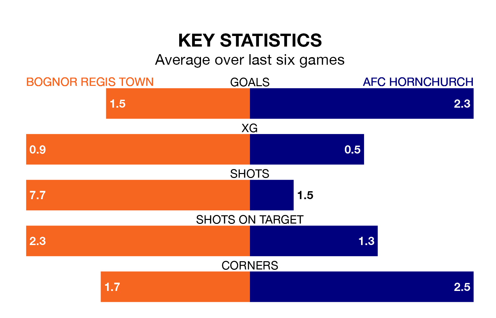

Two of the Isthmian Premier Division's meanest defences go head-to-head at Nyewood Lane on Saturday, when AFC Hornchurch visit Bognor Regis Town.
No teams have conceded fewer goals than Hornchurch to date: the away side have let in just 23 goals in 30 games.
Bognor Regis have conceded 41 goals in 30 games, giving them the fourth tightest back line so far this season.
Hornchurch are top of the table after 30 games, of which they have won 22 and drawn seven, earning 73 points.
Bognor Regis are 10 places behind the away side in 11th, with 12 wins and 11 draws putting them on 47 points.
Town are in reasonable form in the Isthmian Premier Division, with three wins and two draws from their last six games.
With six wins and no losses over that period, Hornchurch's form is much better – they have taken 18 points from 18, compared to the hosts' 11.
In the last 10 years, Bognor Regis and Hornchurch have played each other on 10 occasions. Bognor Regis won two of them, Hornchurch four, and they drew four times.
On average, Bognor Regis scored 1.0 goal and Hornchurch 1.3 in those matches.
Their last meeting was on October 21, when Hornchurch won 4-1 at home.
Bognor Regis's last match was on February 24, a 2-2 draw against Potters Bar Town.
Hornchurch beat Concord Rangers 3-0 last time out, on February 27.
Updated: 09:34 (UTC), 08/03/24